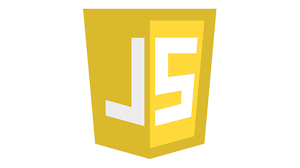

<!DOCTYPE html>
<html lang="es"></html>
<head>
<h1>Lenguajes</h1>

</head>
<body>
   <h1> java</h1>
   <p>Java es un lenguaje de programación y una plataforma informática comercializada por primera vez en 1995 por Sun Microsystems. Hay muchas aplicaciones y sitios web que no funcionarán a menos que tenga Java instalado y cada día se crean más. Java es rápido, seguro y fiable. Desde portátiles hasta centros de datos, desde consolas para juegos hasta súper computadoras, desde teléfonos móviles hasta Internet, Java está en todas partes</p>
    
    <a href="https://www.java.com/es/download/help/whatis_java.html">pagina java</a>
    <h1>Python</h1>
    <p>Python es un lenguaje de programación interpretado cuya filosofía hace hincapié en la legibilidad de su código.​ Se trata de un lenguaje de programación multiparadigma, ya que soporta orientación a objetos, programación imperativa y, en menor medida, programación funcional.</p>
    
    <a href="https://www.python.org/">pagina Python</a>
    <h1>C#</h1>
    <p>"C#" es un lenguaje de programación multiparadigma desarrollado y estandarizado por la empresa Microsoft como parte de su plataforma .NET, que después fue aprobado como un estándar por la ECMA e ISO. C# es uno de los lenguajes de programación diseñados para la infraestructura de lenguaje común.</p>
    
    <a href="https://docs.microsoft.com/en-us/dotnet/csharp/">pagina C#</a>
    <h1>JavaScript</h1>
    <p>JavaScript es un lenguaje de programación interpretado, dialecto del estándar ECMAScript. Se define como orientado a objetos, ​ basado en prototipos, imperativo, débilmente tipado y dinámico.</p>
    
    <a href="https://www.javascript.com/">pagina JavaScript</a>
    <var>
        <a href="file:///home/javier/Documentos/web/taller3/Taller3/menu.html">Retornar a menu </a>
    </var>

</body>
<footer>

</footer>